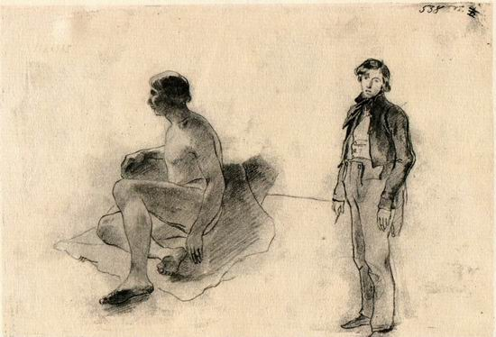
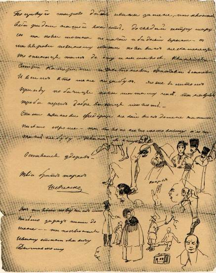
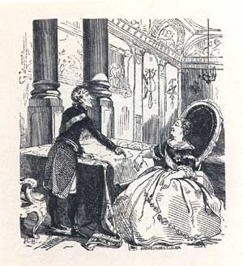
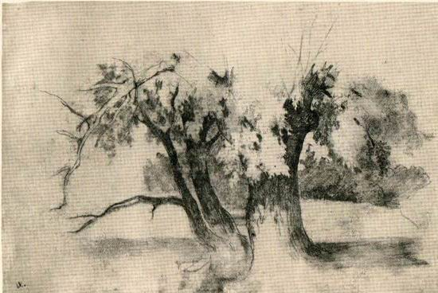
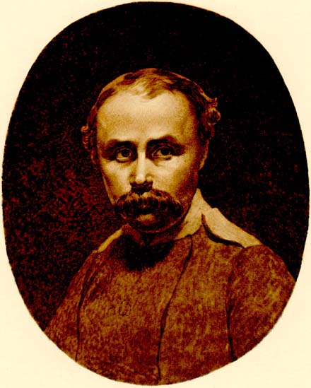
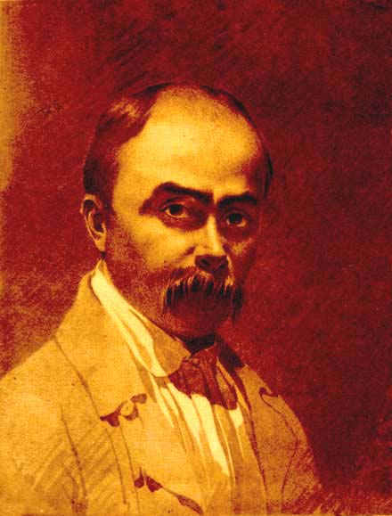
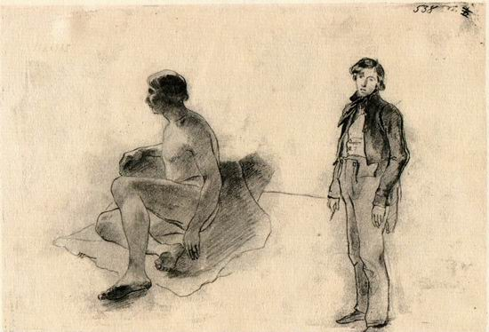
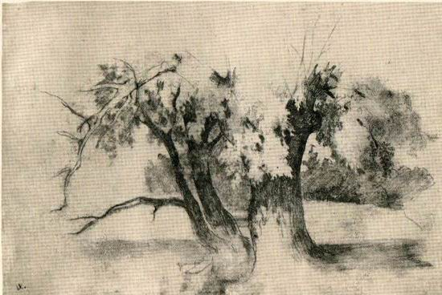

Справді мистецький витвір на художника і взагалі на людину справляє сильніше враження, ніж сама природа.

Тарас Григорович Шевченко, як художник, займає одне із самих почесних місць в українському образотворчому мистецтві. Шевченко був одним із перших художників, які прокладали новий реалістичний напрям, основоположник критичного реалізму в українському мистецтві, одним із зачинателів і першим видатним майстром офорту у вітчизняному мистецтві. Сам він прекрасно володів всіма відомими тоді засобами графічного зображення.
Обдарований від природи хлопчина рано відчув тягу до малювання. Ще змалку крейда і вуглинка були для нього неабиякою радістю. Бажаючи оволодіти мистецтвом живопису, він звертається до шляхетних дяків-живописців, які в основному заставляють прислужувати їм.
Талант художника проявився рано, значно раніше, ніж талант поета. Якщо перші літературні спроби припадають на 1836-1837 роки, то найбільш ранній малюнок, що дійшов до нас і відомий під назвою «Погруддя жінки» або «Жіноча голівка», датований самим автором ще 1830 роком. З цієї юнацької роботи і розпочалась творчість видатного художника.
Після того, як спільними зусиллями К. Брюллова, В. Григоровича, О. Венеціанова, В. Жуковського, Є. Гребінки Т. Г. Шавченка було викуплено з кріпацтва, він зміг вступити до Академії мистецтв, ставши одним з найулюбленіших учнів Брюллова. Тарас робить у малярстві дедалі помітніші успіхи. За час навчання в академії його тричі нагороджують срібною, а потім золотою медалями за малюнки з натури і живописні твори.
У 1843 році Тарас Григорович приїхав в Україну. Любов до рідного краю наштовхнула його на створення цілої серії картин. Уміння інтерпретатора історії Шевченко виявив у трьох офортах серії «Живописна Україна» – «Дари в Чигирині 1649 року», «Судня рада» і «Старости», на яких відображено історичні місця, побут і природу країни. Повертаючись в Петербург, він завершує навчання в Академії, видає на власні кошти і поширює альбом під назвою «Живописна Україна».
В 1845-1847 роках Тарас Григорович створив ряд портретів, які переконливо свідчать про зростання художника, про поглиблення психологічної характеристики образів.
Над портретами Т. Шевченко почав працювати ще кріпаком. В Академії продовжував роботу в цій галузі. Незабаром він стає одним з відомих і популярних портретистів. Створені ним образи відзначаються невимушеністю, відсутністю нарядності, вдалою композиційною бадьорістю і свіжістю барв, намаганням дати психологічну характеристику людині.
Шевченко зробив великий внесок у розвиток побутового жанру і став його основоположником в українському мистецтві. Особливо хвилювало художника підневільне, часто трагічне становище жінки.
Шевченка без перебільшення можна назвати геніальним художником. В його картинах відбилася вся глибина і самобутність його особистості. Те, що він пережив і передумав і для чого знайшов небувало синкретичне вираження, ‒ вищою мірою виявляє сутність людини взагалі і водночас позначене печаттю могутньої й неповторної індивідуальності, засвідчуючи невичерпне розмаїття людського духу.

Портрет Горленко. Полотно, олія.

Портрет П.В. Енгельгардта. Акварель. 1833.

Голова жінки. Акварель. 1834.

Смерть Лукреції. Туш. 1835

Смерть Олега, князя Древлянського. Туш. 1836

Олександр Македонський виявляє довір'я своєму лікареві Філіпу. Акварель, туш. 1836.

Смерть Віргінії. Акварель, туш. 1836

Абази. Акварель. 1837.

Портрет І.П. Гребінки. Акварель. 1837.

Портрет невідомого. Акварель. (1837 - 1838).

Портрет М.О. Луніна. Акварель. 1838.

Смерть Богдана Хмельницького. 1836-1837. Туш.

Смерть Сократа. 1837. Папір, туш.

РУКА. ЕТЮД ДО ПОРТРЕТА Є.П. ГРЕБІНКИ. Олівець. [1837].

Козацький бенкет. Олiвець. 25.12.1838

Портрет дівчини з собакою. 1838. Акварель.
Портрет А.I. Лагоди. Акварель. 1839.
ГІЛКА. Начерк. Олівець. [1839-1843].
БІЛЯ СТОЛУ. Начерк. Олівець. [1839-1843].
ЖІНОЧИЙ ПОРТРЕТ. Начерк. Олівець. [1839-1843].
НАТУРЩИК. Начерки. Олівець. [1839-1842].
НАЧЕРК. Олівець. [1839-1843].
ТОПОЛЯ. Етюд. Олівець. [1839].
ПОРТРЕТ А.І. ЛАГОДИ. Начерк. Олівець. [1839].
В НАТУРНОМУ КЛАСІ АКАДЕМІЇ ХУДОЖЕСТВ ТА ІНШІ ЕСКІЗИ Й НАЧЕРКИ. Олівець. [1839-1842].
В НАТУРНОМУ КЛАСІ АКАДЕМІЇ ХУДОЖЕСТВ. Начерки. Олівець. [1839-1842].
ГОЛОВА ГІПСОВОЇ СКУЛЬПТУРИ ДИТИНИ. ГІПСОВА РУКА. НАТУРЩИК СТЕПАН. Начерки. Олівець. [1839-1842].
НАТУРЩИКИ ТА УЧНІ АКАДЕМІЇ ХУДОЖЕСТВ. Начерки. Олівець. [1839-1842].
НАТУРЩИК І УЧЕНЬ АКАДЕМІЇ ХУДОЖЕСТВ. Олівець. [1839-1842].
УЧНІ АКАДЕМІЇ ХУДОЖЕСТВ ТА ІНШІ НАЧЕРКИ. Олівець. [1839-1842].

В НАТУРНОМУ КЛАСІ АКАДЕМІЇ ХУДОЖЕСТВ. Начерки. Олівець. [1839-1842].
ЖІНОЧИЙ ПОРТРЕТ. Ескізи. Олівець. [1839-1843].
ПОРТРЕТ ЖІНКИ З ЛОКОНАМИ. Олівець. [1839-1843].
ЖІНКА, ЩО СИДИТЬ. Ескіз. Олівець. [1839-1843].
ЛЮДИНА НА БЕРЕЗІ. Ескіз. Олівець. [1839-1843].
Натурщиця. Акварель, бронза. 1840.
Голова матерi. Олiя. (1838 - 1840)
Перерване побачення. Копiя з акварелi К.П. Брюллова. Акварель. (1839 - 1840).
МАРІЯ. ГОЛОВА КОНЯ. Ескіз малюнка. Ескіз до картини «Катерина». Олівець. [1840, 1842].
ЖАНРОВА СЦЕНА. Ескіз. Олівець. [1840-1843].
«УТОПЛЕНА». ХЛОПЧИК З СОБАКОЮ. НАРЦИС ТА ІНШІ ЕСКІЗИ І НАЧЕРКИ. Олівець. [1840-1841].
НАЧЕРКИ НА ЛИСТІ ДО БРАТА, М.Г. ШЕВЧЕНКА. Чорнило. 2.ІІІ 1840.s
НАЧЕРКИ НА ЛИСТІ ДО БРАТА, М.Г. ШЕВЧЕНКА. Чорнило. 2.ІІІ 1840.
ГІЛЛЯ ДУБА. Начерки. Олівець. [1840-1842].
Автопортрет. 1840. Полотно, олія.
Натурщики. Вугiль, крейда. (квiтень 1840 - сiчень 1841).
Натурщик в позi Св. Себастiяна. Олiя. (Зима 1840 - 1841).
Знахар. Iлюстрацiя до однойменного твору Г.Ф. Квiтки-Основ'яненка. Олiвець, туш. (н.п. 10.10.1841)
Знахар. Iлюстрацiя до однойменного твору Г.Ф. Квiтки-Основ'яненка. Гравюра на деревi. (н.п. 10.10.1841)
ПАННА СОТКІВНА. Ескіз та інші начерки. Олівець. [1841-1842].
НА ЛЕКЦІЇ З АНАТОМІЇ. Начерки. Олівець. [I-VII 1841].
«ПАННА СОТНИКІВНА». Ескіз. Олівець. [XII 1841-XI 1842].
РУКАВИ ЖІНОЧОЇ СОРОЧКИ. Етюди. Олівець. [XII 1841-XI 1842]
ЖІНКА В САРАФАНІ, ДІД ТА ІНШІ НАЧЕРКИ. Олівець. [1841-1842].
КАТОЛИЦЬКИЙ ЧЕРНЕЦЬ. ЕСКІЗ ІЛЮСТРАЦІЇ ДО ТВОРУ М. І. НАДЄЖДІНА «СИЛА ВОЛИ». Олівець. [Н. п. 30.ІV 1841].
НАЧЕРКИ ІЛЮСТРАЦІЙ ДО ТВОРУ М. І. НАДЄЖДІНА «СИЛА ВОЛИ». Олівець. [Н. п. 30.ІV 1841].
БІЛЯ ХВОРОГО. Олівець. [Н. п. 10.Х 1841].
ДІД. ЕТЮД ДО КАРТИНИ «КАТЕРИНА» ТА ІНШІ ЕТЮДИ І НАЧЕРКИ. Олівець. [XII 1841-1842].

Натурщик. Олiя. (квiтень 1840 - сiчень 1842).
Зустрiч Тараса Бульби з синами. Iлюстрацiя до повiстi М.В. Гоголя "Тарас Бульба" Сепiя. 1842.
Портрет невiдомої бiля фортепiано. (Акварель). 1842

Катерина. Олiя. (Лiто). 1842
Суворов у татарському наметі. 1842.
Суворов на варті. 1842.
Сліпа з дочкою. Автоілюстрація до поеми "Слепая". Олівець, сепія. (1842).
Суворов у Муса-Бея. (1842).
Суворов на святі в честь угоди з татарами. (1842).
Суворов у кримського хана Шагін-Гірея. (1842).
Суворов приймає депутатів польського короля Станіслава. (1842).
Смерть Потьомкіна. (1842).
Гонець сповіщає візира турецького про несподіваний напад Суворова. (1842).
Принц Кобурзький вітає Суворова. (1842).

Зустріч Катерини ІІ з королем польським Станіславом у Каневі. (1842).
Суворов одержує орден від Павла І перед походом в Італію. (1842).

Суворов читає "Апостола" в церкві с. Кончанське. (1842).
Прощання Суворова з солдатами в Тульчині. (1842).
Суворов викладає Катерині ІІ плани воєнних дій. (1842).
Суворов у склепі перед труною австрійського генералісимуса Лаудона. (1842).
Суворов розмовляє з абатом. (1842).
Суворов в останні години життя. (1842).
Хворому Суворову передають орден від Людовіка VII. (1842).
Суворов за дзвонаря. (1842).
Художник І.Г. Шмідт малює портрет Суворова.
Суворов влаштовує в Празі розваги за російськими народними звичаями. (1842).
«СЛЕПАЯ», «ИСТОРИЯ СУВОРОВА», «КАТЕРИНА» ТА ІНШІ ЕСКІЗИ І НАЧЕРКИ. Олівець, туш. [1842].
«ИСТОРИЯ СУВОРОВА». Ескізи та інші начерки. Олівець, туш. [1842].
«КАТЕРИНА», «ИСТОРИЯ СУВОРОВА» ТА ІНШІ НАЧЕРКИ. Олівець. [1842].
«ИСТОРИЯ СУВОРОВА». Ескіз та інші начерки. Олівець. [1842-1843].
«СЛЕПАЯ», «ИСТОРИЯ СУВОРОВА». Ескізи та начерки. Олівець, сепія, туш. [1842].
ОКСАНА. ЕСКІЗ АВТОІЛЮСТРАЦІЇ ДО ПОЕМИ «СЛЕПАЯ» (?). Туш, олівець. [1842].
ОКСАНА. ЕСКІЗ АВТОІЛЮСТРАЦІЇ ДО ПОЕМИ «СЛЕПАЯ» (?). Червоний олівець. [1842].
ДОПИТ ПОЛОНЕНИХ. ІЛЮСТРАЦІЯ ДО ПОЕМИ К. Ф. РИЛЄЄВА «ВОЙНАРОВСКИЙ». Ескіз та начерки. Олівець. [1842].

СМЕРТЬ БОГДАНА ХМЕЛЬНИЦЬКОГО. Ескізи. Олівець. [1842-1843].
ХУДОЖНИК ПЕРЕД МОЛЬБЕРТОМ ТА ІНШІ ЕСКІЗИ І НАЧЕРКИ. Олівець. [1842].
АНАТОМІЧНИЙ МАЛЮНОК. Акварель. [Зима 1842].
СМЕРТЬ БОГДАНА ХМЕЛЬНИЦЬКОГО. Ескіз. Олівець. [1842-1843].
СМЕРТЬ БОГДАНА ХМЕЛЬНИЦЬКОГО. Ескіз. Олівець. [1842-1843].
Катерина. 1842. Полотно, олія.
В ГАРЕМІ. Ескіз. Олівець. [1843].
Портрети невiдомих. Олiвець. (1840 - 1843).
Вдовина хата на Україні. Олівець. (Травень - жовтень 1843).
Портрет Р.І. Лук омського. Олівець. (н.р. травень) 1843.
Портрет Маєвської. Олія. (н.р. травень) 1843.
"Сліпий" ("Невільник"). Сепія. (н.р. травень 1843).
"Сліпий" ("Невільник"). Сепія. (н.р. травень 1843).
На пасіці. Олія. (н.р. травень 1843).
Селянська родина. Олія. (н.р. травень 1843).
В гаремі. Акварель. 1843.
Портрет художника-баталіста О.Є. Коцюбу. Акварель. 1843.
Король Лір. Композиція на тему однойменної трагедії Шекспіра. Гальванокаустика. (н.п. 10.11.1843)
Портрет П.О. Закревського. Олія. (9 - 23 грудня 1843).
Портрет Г.І. Закревської. Олія. (9 - 23 грудня 1843).
СЕЛЯНИ. Олівець. [Н. р. V 1843].
ЖІНКА НА ПІДЛОЗІ. Ескіз композиції до невідомого твору. Олівець. [Н. р. V 1843].
СЕЛЯНСКА РОДИНА. Начерк ескіза. Олівець. [Н. р. V 1843].
ДЕРЕВА. Етюд. Олівець. [V-IX 1843].
КУРІНЬ СТРЮЧКА. Олівець. [Н. р. V 1843].
СЕЛЯНИ ТА ІНШІ НАЧЕРКИ. Оліець. [Н. р. V 1843].
ДАЛЬНІ ПЕЧЕРИ КИЄВО-ПЕЧЕРСЬКОЇ ЛАВРИ. Олівець. [V-IX 1843].
ПОСТАТЬ СЕЛЯНИНА ЗІ СПИНИ. ДЕРЕВО. Начерки. Олівець. [Н. р. V 1843].s
КИЇВ З-ЗА ДНІПРА ТА ІНШІ НАЧЕРКИ. Олівець. [V-IX 1843].
ХАТА БІЛЯ РІЧКИ. Олівець. [V-X 1843].
СТАРОСТИ. Етюди. Олівець. [Н. р. V 1843].
СТАРОСТИ. Етюди. Олівець. [Н. р. V 1843].
СТАРОСТИ. Етюди до офорта і окремий начерк. Олівець. [Н. р. V 1843].
СЕЛЯНИН. СЕЛЯНКА. БУДІВЛЯ З ПЛАНОМ. Начерки. Олівець. [Н. р. V 1843].
СУДНЯ РАДА. Ескіз. Олівець. [Н. р. V 1843].
ХАТА БАТЬКІВ Т.Г. ШЕВЧЕНКА В с. КИРИЛІВЦІ. Олівець. [IX 1843].
КОМПОЗИЦІЯ НА ІСТОРИЧНУ ТЕМУ. Ескізи та начерк. Олівець. [Н. р. V 1843].
КОМПОЗИЦІЯ НА ІСТОРИЧНУ ТЕМУ. Ескіз. Олівець. [Н. р. V 1843].
СУДНЯ РАДА. Ескіз. Олівець. [Н. р. V 1843].

СТАРОСТИ. Етюди. Олівець. [Н. р. V 1843].
СЕЛЯНСЬКА РОДИНА. Ескіз. Олівець. [Н. р. V 1843].
СУДНЯ РАДА. Етюд. Олівець. [V 1843-1 1844].

Автопортрет. 1843. Папір, туш.
Хата батьків Т.Г.Шевченка в селі Кирилівці. 1843. Олівець.
Портрет Г.І.Закревської. 1843. Полотно, олія.
Портрет О.Д. Меншикова. Гравюра. (1844)
Судня рада. Офорт. (Березень - травень) 1844.
У Києві. Офорт. (Березень - травень) 1844.
Дари в Чигирині 1649 року. Туш. (Березень - квітень 1844).
Натурщик. Олівець, вугіль. (1844).

Портрет дітей В.М. Репніна. Олія. (1 - 10 січня) 1844.
Портрет П.О. Румянцева. Гравюра. (1844)
Портрет Б.Х. Мініха. Гравюра. (1844)
Портрет Б.П. Шереметєва. Гравюра. (1844)
Казка. Офорт. (н.п. серпень) 1844.
Старости. Офорт. (н.п. листопад) 1844.s
Портрет П.Х. Вітгенштейна. Гравюра. (1844)
Портрет М.І. Голенищева-Кутузова. Гравюра. (1844)
Портрет О.В. Суворова. Гравюра. (1844)
Портрет Г.О. Потьомкіна. Гравюра. (1844)
У КИЄВІ. Олівець. [III-IV 1844].
Видубецький монастир у Києві. 1844. Папір, офорт.
Портрет Й.Ф. Рудзинського. Олія. (Квітень - травень) 1845.
Т. Г. Шевченко малює селянське подвір'я. Сепія. (Весна 1845).

Портрет невідомої в коричневому вбранні. Акварель. 1845.
В Решетилівці. Туш, сепія, акварель. (Серпень 1845).
Портрет О.А. Лук'яновича. Олія. ( Жовтень 1845).
ВОЗНЕСЕНСЬКИЙ СОБОР В ПЕРЕЯСЛАВІ. [VIII-IX 1845].
БОГДАНОВА ЦЕРКВА В СУБОТОВІ. Акварель. [IV-X 1845].
Собор Почаївської Лаври (внутрішній вигляд). Акварель. ( Жовтень 1846)

Портрет І.І. Лизогуба. Олія. ( 28.02 - 30.04.1846; березень 1847).
Портрет Є. В.Кейкуатової. 1847. Полотно, олія.

Автопортрет. 1847. Папір, олівець.
Пожежа в степу. 1848. Папір, акварель.
Автопортрет. 1849. Папір, сепія.
Казахи біля вогню. 1848-1849 Папір, сепія.
Шхуни біля форту Кос-Арал. 1848-1849. Папір, акварель.

Автопортрет. 1849-1850 Сепія.
Вид на Кара-Тау з долини Апазир. 1851 папір, акварель.
Автопортрет. 1851. Папір, олівець, білило.
Автопортрет, подарований Я.Г.Кухаренкові. 1853-1854. Папір, сепія.
Самаритянка. 1856. Папір, сепія.
Казашка над ступою. 1856. Папір, сепія.
Тарас Шевченко і діти-байгуші. 1855-1857. Папір, сепія.
Казашка Катя. 1856-1857. Папір, сепія.
Портрет М.С.Кржисевич. 1858. Папір, італійський олівець, крейда.
Свята родина. 1858. Офорт, акватинта.
Русалки.1859. Сепія, білило.
Старець на кладовищі. 1859 Папір, офорт.
Портрет В.Л.Кочубея. 1859. Полотно, олія.
В Черкасах. 1859. Папір, олівець, туш.
Автопортрет зі свічкою. 1860. Папір, офорт, акватинта.
Автопортрет у темному костюмі. 1860. Папір, офорт, акватинта.
Автопортрет у світлому костюмі. 1860. Папір, офорт.
В Корсуні. 1859 Папір, туш, перо.
Автопортрет у шапці та кожусі. 1860. Папір, офорт.
{kind=link}
![ГІЛКА. Начерк. Олівець. [1839-1843].](img/paint/18.jpg){kind=link}
![БІЛЯ СТОЛУ. Начерк. Олівець. [1839-1843].](img/paint/19.jpg){kind=link}
![ЖІНОЧИЙ ПОРТРЕТ. Начерк. Олівець. [1839-1843].](img/paint/20.jpg){kind=link}
![НАТУРЩИК. Начерки. Олівець. [1839-1842].](img/paint/21.jpg){kind=link}
![НАЧЕРК. Олівець. [1839-1843].](img/paint/22.jpg){kind=link}
![ТОПОЛЯ. Етюд. Олівець. [1839].](img/paint/23.jpg){kind=link}
![ПОРТРЕТ А.І. ЛАГОДИ. Начерк. Олівець. [1839].](img/paint/24.jpg){kind=link}
![В НАТУРНОМУ КЛАСІ АКАДЕМІЇ ХУДОЖЕСТВ ТА ІНШІ ЕСКІЗИ Й НАЧЕРКИ. Олівець. [1839-1842].](img/paint/25.jpg){kind=link}
![В НАТУРНОМУ КЛАСІ АКАДЕМІЇ ХУДОЖЕСТВ. Начерки. Олівець. [1839-1842].](img/paint/26.jpg){kind=link}
![ГОЛОВА ГІПСОВОЇ СКУЛЬПТУРИ ДИТИНИ. ГІПСОВА РУКА. НАТУРЩИК СТЕПАН. Начерки. Олівець. [1839-1842].](img/paint/27.jpg){kind=link}
![НАТУРЩИКИ ТА УЧНІ АКАДЕМІЇ ХУДОЖЕСТВ. Начерки. Олівець. [1839-1842].](img/paint/28.jpg){kind=link}
![ НАТУРЩИК І УЧЕНЬ АКАДЕМІЇ ХУДОЖЕСТВ. Олівець. [1839-1842].](img/paint/29.jpg){kind=link}
![УЧНІ АКАДЕМІЇ ХУДОЖЕСТВ ТА ІНШІ НАЧЕРКИ. Олівець. [1839-1842].](img/paint/30.jpg){kind=link}
![ЖІНОЧИЙ ПОРТРЕТ. Ескізи. Олівець. [1839-1843].](img/paint/32.jpg){kind=link}
![ПОРТРЕТ ЖІНКИ З ЛОКОНАМИ. Олівець. [1839-1843].](img/paint/33.jpg){kind=link}
![ЖІНКА, ЩО СИДИТЬ. Ескіз. Олівець. [1839-1843].](img/paint/34.jpg){kind=link}
![ЛЮДИНА НА БЕРЕЗІ. Ескіз. Олівець. [1839-1843].](img/paint/35.jpg){kind=link}
{kind=link}
{kind=link}
{kind=link}
![МАРІЯ. ГОЛОВА КОНЯ. Ескіз малюнка. Ескіз до картини «Катерина». Олівець. [1840, 1842].](img/paint/39.jpg){kind=link}
![ЖАНРОВА СЦЕНА. Ескіз. Олівець. [1840-1843].](img/paint/40.jpg){kind=link}
![«УТОПЛЕНА». ХЛОПЧИК З СОБАКОЮ. НАРЦИС ТА ІНШІ ЕСКІЗИ І НАЧЕРКИ. Олівець. [1840-1841].](img/paint/41.jpg){kind=link}
{kind=link}
{kind=link}
![ГІЛЛЯ ДУБА. Начерки. Олівець. [1840-1842].](img/paint/44.jpg){kind=link}
{kind=link}
{kind=link}
{kind=link}
{kind=link}
{kind=link}
![ПАННА СОТКІВНА. Ескіз та інші начерки. Олівець. [1841-1842].](img/paint/53.jpg){kind=link}
![НА ЛЕКЦІЇ З АНАТОМІЇ. Начерки. Олівець. [I-VII 1841].](img/paint/54.jpg){kind=link}
![«ПАННА СОТНИКІВНА». Ескіз. Олівець. [XII 1841-XI 1842].](img/paint/55.jpg){kind=link}
![РУКАВИ ЖІНОЧОЇ СОРОЧКИ. Етюди. Олівець. [XII 1841-XI 1842]](img/paint/56.jpg){kind=link}
![ЖІНКА В САРАФАНІ, ДІД ТА ІНШІ НАЧЕРКИ. Олівець. [1841-1842].](img/paint/57.jpg){kind=link}
![КАТОЛИЦЬКИЙ ЧЕРНЕЦЬ. ЕСКІЗ ІЛЮСТРАЦІЇ ДО ТВОРУ М. І. НАДЄЖДІНА «СИЛА ВОЛИ». Олівець. [Н. п. 30.ІV 1841].](img/paint/58.jpg){kind=link}
![НАЧЕРКИ ІЛЮСТРАЦІЙ ДО ТВОРУ М. І. НАДЄЖДІНА «СИЛА ВОЛИ». Олівець. [Н. п. 30.ІV 1841].](img/paint/59.jpg){kind=link}
![БІЛЯ ХВОРОГО. Олівець. [Н. п. 10.Х 1841].](img/paint/60.jpg){kind=link}
![ДІД. ЕТЮД ДО КАРТИНИ «КАТЕРИНА» ТА ІНШІ ЕТЮДИ І НАЧЕРКИ. Олівець. [XII 1841-1842].](img/paint/61.jpg){kind=link}
{kind=link}
{kind=link}
{kind=link}
{kind=link}
{kind=link}
{kind=link}
{kind=link}
{kind=link}
{kind=link}
{kind=link}
{kind=link}
{kind=link}
{kind=link}
{kind=link}
{kind=link}
{kind=link}
{kind=link}
{kind=link}
{kind=link}
{kind=link}
{kind=link}
{kind=link}
![«СЛЕПАЯ», «ИСТОРИЯ СУВОРОВА», «КАТЕРИНА» ТА ІНШІ ЕСКІЗИ І НАЧЕРКИ. Олівець, туш. [1842].](img/paint/89.jpg){kind=link}
![«ИСТОРИЯ СУВОРОВА». Ескізи та інші начерки. Олівець, туш. [1842].](img/paint/90.jpg){kind=link}
![«КАТЕРИНА», «ИСТОРИЯ СУВОРОВА» ТА ІНШІ НАЧЕРКИ. Олівець. [1842].](img/paint/91.jpg){kind=link}
![«ИСТОРИЯ СУВОРОВА». Ескіз та інші начерки. Олівець. [1842-1843].](img/paint/92.jpg){kind=link}
![«СЛЕПАЯ», «ИСТОРИЯ СУВОРОВА». Ескізи та начерки. Олівець, сепія, туш. [1842].](img/paint/93.jpg){kind=link}
![ОКСАНА. ЕСКІЗ АВТОІЛЮСТРАЦІЇ ДО ПОЕМИ «СЛЕПАЯ» (?). Туш, олівець. [1842].](img/paint/94.jpg){kind=link}
![ОКСАНА. ЕСКІЗ АВТОІЛЮСТРАЦІЇ ДО ПОЕМИ «СЛЕПАЯ» (?). Червоний олівець. [1842].](img/paint/95.jpg){kind=link}
![ДОПИТ ПОЛОНЕНИХ. ІЛЮСТРАЦІЯ ДО ПОЕМИ К. Ф. РИЛЄЄВА «ВОЙНАРОВСКИЙ». Ескіз та начерки. Олівець. [1842].](img/paint/96.jpg){kind=link}
![ХУДОЖНИК ПЕРЕД МОЛЬБЕРТОМ ТА ІНШІ ЕСКІЗИ І НАЧЕРКИ. Олівець. [1842].](img/paint/98.jpg){kind=link}
![АНАТОМІЧНИЙ МАЛЮНОК. Акварель. [Зима 1842].](img/paint/99.jpg){kind=link}
![СМЕРТЬ БОГДАНА ХМЕЛЬНИЦЬКОГО. Ескіз. Олівець. [1842-1843].](img/paint/100.jpg){kind=link}
![СМЕРТЬ БОГДАНА ХМЕЛЬНИЦЬКОГО. Ескіз. Олівець. [1842-1843].](img/paint/101.jpg){kind=link}
{kind=link}
![В ГАРЕМІ. Ескіз. Олівець. [1843].](img/paint/103.jpg){kind=link}
{kind=link}
{kind=link}
{kind=link}
{kind=link}
{kind=link}
{kind=link}
{kind=link}
{kind=link}
{kind=link}
{kind=link}
{kind=link}
{kind=link}
{kind=link}
![СЕЛЯНИ. Олівець. [Н. р. V 1843].](img/paint/117.jpg){kind=link}
![ЖІНКА НА ПІДЛОЗІ. Ескіз композиції до невідомого твору. Олівець. [Н. р. V 1843].](img/paint/118.jpg){kind=link}
![СЕЛЯНСКА РОДИНА. Начерк ескіза. Олівець. [Н. р. V 1843].](img/paint/119.jpg){kind=link}
![ ДЕРЕВА. Етюд. Олівець. [V-IX 1843].](img/paint/120.jpg){kind=link}
![КУРІНЬ СТРЮЧКА. Олівець. [Н. р. V 1843].](img/paint/121.jpg){kind=link}
![СЕЛЯНИ ТА ІНШІ НАЧЕРКИ. Оліець. [Н. р. V 1843].](img/paint/122.jpg){kind=link}
![ДАЛЬНІ ПЕЧЕРИ КИЄВО-ПЕЧЕРСЬКОЇ ЛАВРИ. Олівець. [V-IX 1843].](img/paint/123.jpg){kind=link}
![ПОСТАТЬ СЕЛЯНИНА ЗІ СПИНИ. ДЕРЕВО. Начерки. Олівець. [Н. р. V 1843].s](img/paint/124.jpg){kind=link}
![КИЇВ З-ЗА ДНІПРА ТА ІНШІ НАЧЕРКИ. Олівець. [V-IX 1843].](img/paint/125.jpg){kind=link}
![ХАТА БІЛЯ РІЧКИ. Олівець. [V-X 1843].](img/paint/126.jpg){kind=link}
![СТАРОСТИ. Етюди. Олівець. [Н. р. V 1843].](img/paint/127.jpg){kind=link}
![СТАРОСТИ. Етюди. Олівець. [Н. р. V 1843].](img/paint/128.jpg){kind=link}
![СТАРОСТИ. Етюди до офорта і окремий начерк. Олівець. [Н. р. V 1843].](img/paint/129.jpg){kind=link}
![СЕЛЯНИН. СЕЛЯНКА. БУДІВЛЯ З ПЛАНОМ. Начерки. Олівець. [Н. р. V 1843].](img/paint/130.jpg){kind=link}
![СУДНЯ РАДА. Ескіз. Олівець. [Н. р. V 1843].](img/paint/132.jpg){kind=link}
![ХАТА БАТЬКІВ Т.Г. ШЕВЧЕНКА В с. КИРИЛІВЦІ. Олівець. [IX 1843].](img/paint/133.jpg){kind=link}
![КОМПОЗИЦІЯ НА ІСТОРИЧНУ ТЕМУ. Ескізи та начерк. Олівець. [Н. р. V 1843].](img/paint/134.jpg){kind=link}
![КОМПОЗИЦІЯ НА ІСТОРИЧНУ ТЕМУ. Ескіз. Олівець. [Н. р. V 1843].](img/paint/135.jpg){kind=link}
![СУДНЯ РАДА. Ескіз. Олівець. [Н. р. V 1843].](img/paint/136.jpg){kind=link}
![СЕЛЯНСЬКА РОДИНА. Ескіз. Олівець. [Н. р. V 1843].](img/paint/140.jpg){kind=link}
![СУДНЯ РАДА. Етюд. Олівець. [V 1843-1 1844].](img/paint/141.jpg){kind=link}
{kind=link}
{kind=link}
{kind=link}
{kind=link}
{kind=link}
{kind=link}
{kind=link}
{kind=link}
{kind=link}
{kind=link}
{kind=link}
{kind=link}
{kind=link}
{kind=link}
{kind=link}
{kind=link}
![У КИЄВІ. Олівець. [III-IV 1844].](img/paint/162.jpg){kind=link}
{kind=link}
{kind=link}
{kind=link}
{kind=link}
{kind=link}
![ВОЗНЕСЕНСЬКИЙ СОБОР В ПЕРЕЯСЛАВІ. [VIII-IX 1845].](img/paint/169.jpg){kind=link}
![БОГДАНОВА ЦЕРКВА В СУБОТОВІ. Акварель. [IV-X 1845].](img/paint/170.jpg){kind=link}
{kind=link}
{kind=link}
{kind=link}
{kind=link}
{kind=link}
{kind=link}
{kind=link}
{kind=link}
{kind=link}
{kind=link}
{kind=link}
{kind=link}
{kind=link}
{kind=link}
{kind=link}
{kind=link}
{kind=link}
{kind=link}
{kind=link}
{kind=link}
{kind=link}
{kind=link}
{kind=link}
{kind=link}